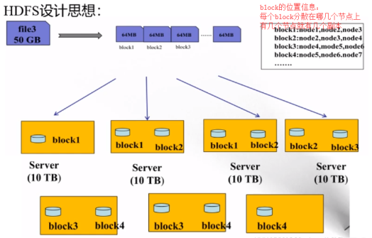
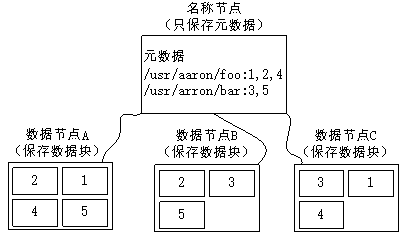
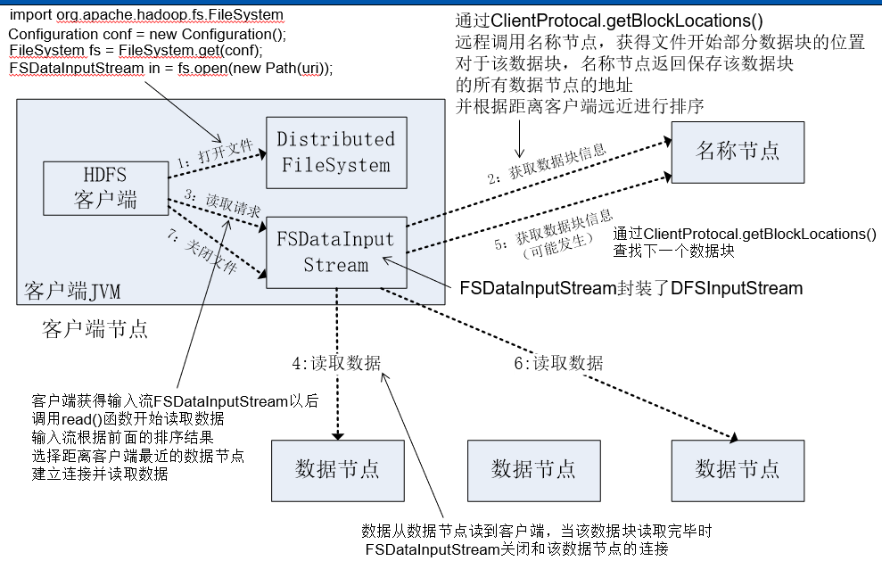
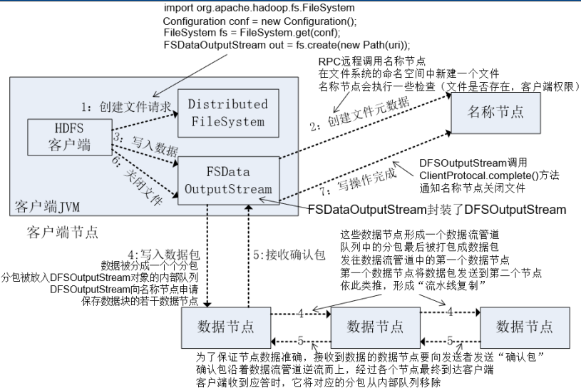
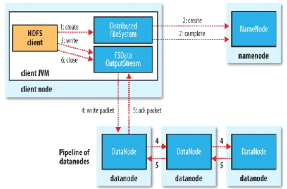

hdfs最重要的2个原理，存储原理和读写流程。网上的往往都不全，自己把网上各个说法整合了一下
(1) 支持大规模文件存储：文件以块为单位进行存储，一个大规模文件可以被分拆成若干个文件块，不同的文件块可以被分发到不同的节点上，因此，一个文件的大小不会受到单个节点的存储容量的限制，可以远远大于网络中任意节点的存储容量
(2) 简化系统设计：首先，大大简化了存储管理，因为文件块大小是固定的，这样就可以很容易计算出一个节点可以存储多少文件块；其次，方便了元数据的管理，元数据不需要和文件块一起存储，可以由其他系统负责管理元数据
(3) 适合数据备份：每个文件块都可以冗余存储到多个节点上，大大提高了系统的容错性和可用性
(1) 找到块的起始位置，也就是偏移量指示的地方。
(1) 主要取决于磁盘IO速度
(2) 如果设置过小==》块变多，定位一个块寻址时间变多，IO操作变多。
(3) 过大==》磁盘IO时间跟寻址时间不成比例，
(1) 不同文件的block的大小可以不一致。一个文件对应一个blockSize，一个文件只能设置一个blockSize
(2) 分block时，1.x版本默认64M，2.x默认128M，是因为计算机硬盘的I/O速度提高了.
(1) 实际场景下一个文件一般不会不经过切割直接存在一个节点中，而是切割为不同的部分散列到集群节点中，而且每个部分长度相同，集群的节点存块成功后要向管理节点汇报
(1) 比如第一个块的offset就是0，因为第一个块的字节数组的第一个字节在源文件的字节数组的下标就是0

(1) 副本很浪费空间，1T的数据，副本设置为2，就要用2T来存
(2) 但后期使用计算框架时，可以会设的很高，因为一个block可能有多个程序要使用，为了让程序避免出现等待和争抢的情况，会把副本调高。
(1) 因为只要修改了一个block，这个block的长度就变了，整个文件的长度也变了，所有block的offset也就变了。
(2) 其实也可以做成可修改的，其余的block跟修改的block配合一下即可。但这样会极大的增加系统的负荷，因为会出现多台服务器并行修改的情况，需要同步，需要修改元数据。 取消修改的功能，存储层就不会消耗大量的性能。 一次写入，多次读取 为什么有了很多文件系统还要单独开发hdfs？hdfs是为了为分布式计算服务，就是为了能更好的支撑分布式计算，不是仅仅为了存文件。

默认副本数为3：
第一个备份放在客户端相同的datanode上(若客户端在集群外运行,就随机选取一个datanode来存放第一个replica),
第二个replica放在与第一个replica不同机架的一个随机datanode上,
第三个replica放在与第二个replica相同机架的随机datanode上,
如果replica数大于三,则随后的replica在集群中随机存放,Hadoop会尽量避免过多的replica存放在同一个机架上.选取replica存放在同一个机架上.(Hadoop 1.x以后允许replica是可插拔的,意思是说可以定制自己需要的replica分配策略)
第一个备份放在客户端相同的datanode上(若客户端在集群外运行,就随机选取一个datanode来存放第一个replica),
第二个replica和第一个位于相同机架的随机节点
第三个位于和第二个不同rack的随机节点
因为低版本第二个要跨rack传输，可靠性低
(1) 会为每一个固定长度（默认是512字节）的数据执行一次“校验和”，“checksum”的值和数据一起保存起来。就是说一份数据假如5000字节，他会给512字节计算一个校验码，得到5000/512个校验码。
(2) 存之前计算一次checksum，然后将数据和校验和发送到一系列由datanode组成的管线，管线中的最后一个datanode负责校验校验和，存之后再计算一个checksum，如果发现2个数据校验和对不上，则抛出异常，hdfs会进行处理，例如重试这个操作。
(1) 把读出来的数据和读出来的校验和校验，确保读出的数据是正确的，每个datanode都保持着一个用于验证的校验和日志，日志中保存着每个数据块的验证时间，客户端每验证完一个数据块，就会更新日志。
(2) 如果在读取数据的过程中，如果检测到数据校验错误，首先会通知namenode这个已损坏数据块以及正在读取的datanode，再抛出ChecksumException异常。namenode将这个数据块副本标记为已损坏，不再将客户端请求发送到这datanode上，并且会把这个数据块的一个副本复制到另一个datanode上，这样数据块的副本因子又可以变成期望水平，默认为3，最后已损坏的数据块会被删除
(1) datanode也会在后台线程中运行一个DataBlockScanner线程定期检查datanode上的所有数据块，避免磁盘损坏。定期对存储在其上面的block进行检测“检验和”，然后将检测结果向NameNode报告。
(2) 为了提高系统性能，避免数据节点在启动后对还没有过期的数据块又扫描一遍，DataBlockScanner在其内部使用了日志记录器来持久化保存每一个数据块上一次的扫描时间，这样数据节点可以在启动之后通过日志文件来恢复之前所有的数据块的有效时间。

(1) HC通过RPC调用NN的方法获取块信息
(2) 就近，如何找最近的？通过对比HC和DN的机架ID来找最近的，找不到就随机
1st HDFS提供了一个API可以确定一个数据节点所属的机架ID，客户端可以调用这个API获取自己所属的机架ID
2nd 当客户端读取数据时，从名称节点获得数据块不同副本的存放位置列表，列表中包含了副本所在的数据节点，可以调用API来确定客户端和这些数据节点所属的机架ID，当发现某个数据块副本对应的机架ID和客户端对应的机架ID相同时，就优先选择该副本读取数据，如果没有发现，按远近顺序选择下载的节点
(1) 根据当前块的副本节点的排序列表，选择最近的节点下载，如果中途中断，会自动切换节点
(1) 比如hdfs shell 的type命令就可以完成合并
(1) 一个block有2个副本，放在2个节点上，节点1上的计算肯定要优先使用节点1的数据
(1) block
文件上传前在HC分块block，一般为128MB，可以改。因为块太小：寻址时间占比过高。块太大：Map任务数太少，作业执行速度变慢。
(2) packet
packet是第二大的单位，它是client端向DataNode，或PipLine的DataNode之间传数据的基本单位，默认64KB。
(3) chunk
chunk是最小的单位，它是client向DataNode，或PipLine的DataNode之间进行数据校验的基本单位，默认512Byte，因为以chunk为校验单位，故每个chunk需要带有4Byte的校验位。所以实际每个chunk写入packet的大小为516Byte。由此可见真实数据与校验值数据的比值约为128 : 1。（即512/4）

(1) 输入流是open，输出流是create()，由fs对象调用
(2) 数据packet在所有DN全部存储成功之后才会返回ack确认包，最终返回给FSDOS
(3) FileSystem是抽象类，DistributedFileSystem是实现
(1) FileSystem向NN发出写文件的RPC请求。NN会检查文件是否已存在、检查客户端当前用户是否有创建文件的权限。若通过检查，先将操作写入EditLog，再创建没有关联block的文件。
1st NN会对路径检查，如果有了就不能上传了，不能覆盖
2nd WAL，write ahead log，先写Log，再写内存，因为EditLog记录的是最新的HDFS客户端执行所有的写操作。如果后续真实写操作失败了，由于在真实写操作之前，操作就被写入EditLog中了，故EditLog中仍会有记录。
(2) NN从虚拟目录树中创建文件，定义名字，创建元数据。但此时元数据文件是没有位置信息的，需要上传结束后通过DN和NN的心跳来补充信息
1st 元数据是以块为单位的，无论多小的文件，都会对应一个元数据且元数据的大小都一样
2nd 在上传过程中，对应文件旁边会显示copying，此时是不能读取的
(3) 如果create执行成功，会返回FSDataOutputStream。如果失败，报IO异常。FSDataOutputStream封装了一个DFSOutputStream对象负责客户端跟datanode以及namenode的通信。而不仅仅是个简单的输出流对象
(1) DFSOutputStream向NN申请根据replica数、副本存放策略获取保存当前block的DN列表。
1st 上传是以块为单位的，无论多大的文件，都是一个块一个块的上传，NN只关心块，整个文件多大不关心。NN给HC发送dn列表是以block为单位的。此处直接返回保存的列表，不像读的时候仅返回可用的。
2nd 返回的dn列表是根据副本放置策略，副本放置策略是根据机架感知和节点距离选择的。
(1) 如果不在HC切分成小包，DN1要等64M传完才能向下传，如果带宽是64M，传完要等3秒。而切成小包，传完肯定小于3秒。

(1) 如果pipleline上某一节点挂掉了，确认队列超过超时时间得不到确认消息，会向NN汇报。pipeline暂时被关闭，在确认队列中的剩下的包会被添加进数据队列的起始位置上，这样宕机节点下游的节点都不会丢失包。当前在一个好的 DataNode 会联系 NameNode，给失败节点上还未写完的块生成一个新的标识 ID，如果这个失败的 DataNode 不久后恢复了，根据ID把这个不完整的packet删掉，防止数据错误。同时对其已经上传的packet进行统计，避免重复提交。然后从管线中删除故障数据节点。剩下DN组成新的pipeline，继续传输。传完之后，NN会按原有副本机制进行副本校验，将当前pipleline上的一个节点的数据复制到一个替补节点，维持最终副本数的设定。
(2) 如果全挂了，传输失败。
(1) 上传过程不能读取，同一文件同一时刻只能有一个HC可以写